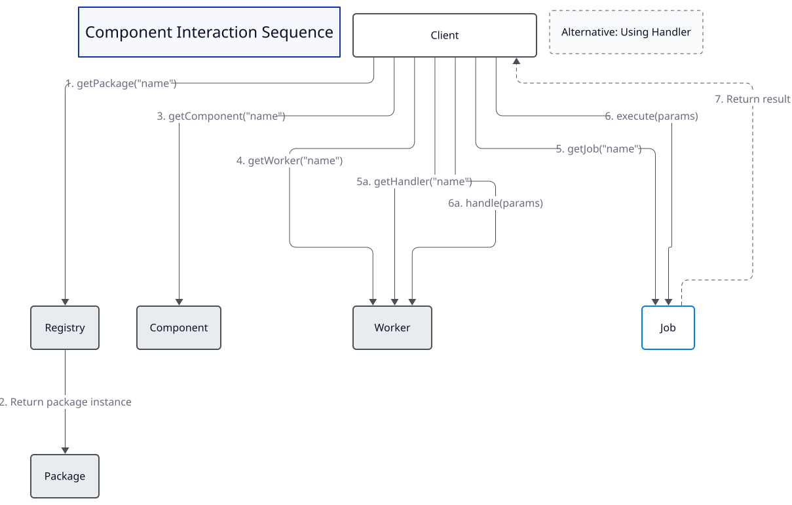

Component Interaction Sequence
This document explores how the various components of Derafu Backbone interact during typical operations, providing insight into the architectural flow and communication patterns.
- The Flow of Control
- Direct Access vs. Hierarchical Access
- Alternative Path: Using Handlers
- Communication Patterns
- Performance Considerations

The Flow of Control
The sequence diagram illustrates the typical flow of control when using Derafu Backbone for a business operation. Understanding this flow is crucial for effectively working with the architecture and designing new components.
1. Entry Point: The Registry
All interaction with a Backbone-based system typically begins with the Package Registry. This is the service locator that provides access to the domain packages in your application. The Package Registry serves as the entry point into your domain architecture.
// Obtaining the package registry (typically from a kernel or container).
$packageRegistry = $container->get(PackageRegistryInterface::class);
The Package Registry is responsible for:
- Maintaining references to all registered packages.
- Providing type-safe access to specific packages.
- Acting as the gateway to your domain architecture.
2. Accessing a Package
After obtaining the registry, the client accesses a specific domain package:
// Get a specific package by name.
$billingPackage = $packageRegistry->getPackage('billing');
// Or using a type-safe helper method.
$billingPackage = $packageRegistry->getBillingPackage();
Packages represent complete domains or subdomains in your application. They contain all components related to a specific business area. The clean organization of packages helps maintain separation between different domains.
3. Accessing a Component
From a package, the client accesses a specific component:
// Access a component within the package.
$invoiceComponent = $billingPackage->getComponent('invoice');
// Or using a type-safe helper method.
$invoiceComponent = $billingPackage->getInvoiceComponent();
Components group related functionality within a domain. They represent functional areas within your domain and contain workers that handle specific aspects of that functionality.
4. Accessing a Worker
From a component, the client accesses a specific worker:
// Access a worker within the component.
$generatorWorker = $invoiceComponent->getWorker('generator');
// Or using a type-safe helper method.
$generatorWorker = $invoiceComponent->getGeneratorWorker();
Workers are the coordinators that expose domain operations through public methods. They manage jobs and handlers to perform specific tasks within a component.
5. Using Jobs or Handlers
Finally, the client accesses and executes a job or handler:
// Using a job.
$invoice = $generatorWorker->getCreateJob()->execute($data);
// Or using a handler.
$result = $generatorWorker->getProcessHandler()->handle($invoice, $options);
Jobs and handlers do the actual work in the system. Jobs perform atomic operations, while handlers orchestrate complex processes that might involve multiple jobs and strategies.
Direct Access vs. Hierarchical Access
While the diagram shows a step-by-step hierarchical flow, it’s important to note that once a client has obtained the registry, it can access any level directly:
// Hierarchical access (step by step).
$invoice = $packageRegistry
->getBillingPackage()
->getInvoiceComponent()
->getGeneratorWorker()
->getCreateJob()
->execute($data);
// Direct access (if you already have a reference to the worker).
$invoice = $generatorWorker->getCreateJob()->execute($data);
Both approaches are valid, but the hierarchical access pattern is generally recommended for application code as it:
- Makes the dependency hierarchy explicit.
- Follows a natural discovery pattern.
- Makes the code more readable and self-documenting.
The direct access pattern can be useful in:
- Unit tests where you want to focus on testing a specific component.
- Performance-critical paths where you can cache references to frequently used services.
- Situations where you already have a reference to a higher-level component.
Alternative Path: Using Handlers
For more complex operations, handlers provide an alternative path:
// Using a handler for complex operations.
$result = $generatorWorker->getProcessHandler()->handle($invoice, $options);
Handlers orchestrate complex workflows and can:
- Execute multiple jobs in sequence.
- Apply conditional logic.
- Select appropriate strategies based on input or configuration.
- Manage transactional boundaries.
- Handle cross-cutting concerns like logging or error handling.
Communication Patterns
The diagram illustrates several important communication patterns in Backbone:
- Hierarchical Organization: Components are organized in a clear hierarchy that reflects your domain structure.
- Dependency Injection: Components receive their dependencies through constructor injection.
- Lazy Loading: Services are typically loaded lazily, meaning they’re only instantiated when needed.
- Interface-Based Programming: Communication happens through well-defined interfaces.
Performance Considerations
The hierarchical structure of Backbone might raise concerns about performance overhead. However, several aspects mitigate this:
- Lazy Loading: Services are loaded only when needed.
- Cached References: In performance-critical paths, you can cache references to frequently used services.
- DI Container Optimization: Modern DI containers can optimize service instantiation.
- Proxy Generation: Backbone can use proxies to further optimize lazy loading.
By understanding these interaction patterns, you can effectively design, implement, and use components within Derafu Backbone to create maintainable and extensible applications.